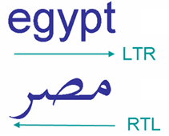
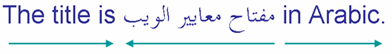
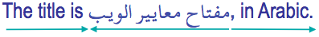
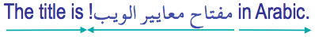
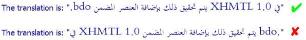
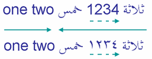

Bidi算法基础
字符和方向类型
我们已经知道，拉丁字母的字符序列是从左到右一个接一个地渲染（显示）的。而bidi算法会将阿拉伯字母或希伯来字母的字符序列从右到左一个接一个地渲染。

你的浏览器怎么知道这是从左到右还是从右到左的字符序列呢？因为Unicode的每个字符都有一个方向属性。大多数字母被强类型化为LTR（从左到右）。来自从右到左书写系统的字母被强类型化为RTL（从右到左）。
强类型化RTL字符的序列将从右到左显示，与周围的基方向无关。
单向文本片段
当具有不同方向的文本在行内混合时，算法会从每个具有相同方向的连续字符序列中产生一个单独的单向文本片段。
以下示例有三个单向文本片段：
请注意，你不需要任何标记或样式来实现这一点。
基方向，一个非常重要的概念
文本的显示顺序取决于分配给它所在的短语、段落或块的基方向。基方向是一个非常重要的概念。它建立了一个方向性上下文，bidi算法在不同的点上会参考这个上下文来决定如何处理文本。
在HTML中，基方向由使用dir属性的最近父元素显式设置。没有这个属性时，会使用默认方向，即从左到右。
重要：单向文本片段在页面上的显示顺序取决于当前的基方向。
在上面的例子中，整体上下文（即基方向）为ltr，你会读到'bahrain'，然后是'مصر'，然后是'kuwait'。
如果你通过将html元素或父元素（如div、p或span元素）的方向变为rtl来改变例子中的方向性上下文，你将改变单向文本片段的顺序。
在这两种情况下，字符在内存中的存储顺序完全相同，但在显示时，单向文本片段的视觉顺序是相反的。
中性字符
空格和标点符号在Unicode中既不被强类型化为LTR也不被强类型化为RTL，因为它们可能用于任一类型的书写系统中。因此它们被归类为中性或弱字符。
字符通常在与数字相关时被归类为"弱"。少数标点字符最初被归类为弱字符，但在非数字上下文中被视为中性字符。因此，在本文中我们将所有标点符号称为中性字符。
这里事情开始变得有趣。当bidi算法遇到具有中性方向属性的字符（如空格和标点符号）时，它通过查看周围的字符来确定如何处理它们。
位于两个具有相同方向类型的强类型化字符之间的中性字符也会假定该方向性。因此，位于两个RTL字符之间的中性字符会被视为RTL字符，并且会扩展单向文本片段。这就是为什么下面示例中的三个阿拉伯语单词作为一个单向文本片段从右到左阅读——包括中间的两个空格，作为中性字符，它们采用周围字符的方向。（箭头显示阅读顺序）

即使在两个强类型化字符之间有几个中性字符，它们都会以相同的方式处理。
这里你仍然不需要任何标记或样式。而且这里仍然只有三个单向文本片段。
但是当空格或标点符号位于两个具有不同方向性的强类型化字符之间，也就是在单向文本片段的边界处时，会发生什么？在这种情况下，中性字符将被视为具有与当前基方向相同的方向性。
因此，如果我们在上面的例子中的最后一个阿拉伯字母后添加逗号，它将被视为LTR（与基方向相同），因此将显示在阿拉伯语文本的右侧，即作为右侧单向文本片段的一部分。

到目前为止一切都很好，但这并不总是对我们有利，正如我们接下来将看到的。
嵌入基方向的变化
如果在前面的示例中，阿拉伯语标题以感叹号结尾，我们会期望它出现在阿拉伯语文本的左边缘。

很可惜，默认情况下它不会这样，因为感叹号将被视为与逗号相同，并且会出现在同一位置，也就是阿拉伯语标题的右侧。
为了纠正这一点，我们需要将阿拉伯语文本加上感叹号的基方向定义为从右到左。这样感叹号将采用从右到左的方向，并被视为阿拉伯语文本的延续。
你使用的标记语言或应用应该提供这种机制（例如在HTML中的q元素上使用dir属性）。我们在下面的超越bidi算法一节中对此进行了更加详细的讨论。
改变基方向不仅在某些情况下对于处理单向文本片段边界上的标点符号是必要的，对于确保嵌入双向文本中单向文本片段的正确顺序也很重要。在以下示例中，上面的行显示了正确的渲染，但下面的行显示了仅使用bidi算法的默认处理。

不用担心不理解文本的含义：问题在于在第二行，如果不改变引号内文本的基方向，引号内的单向文本片段将从左到右排列。同样，解决问题的方法是修改引号内的基方向。
数字
以下是关于数字的简要说明：RTL文字中的数字在从右到左的流中从左到右运行，但bidi算法对它们的处理与单词略有不同。它们被认为具有弱方向性。图片中的两个示例说明了这种差异。

第一个示例使用欧洲数字"1234"，第二个示例使用阿拉伯-印度数字 ١٢٣٤ 表示相同的数字。在这两种情况下，数字都是从左到右阅读的。
由于数字是弱类型化的，它们被视为前面阿拉伯语文本的一部分，因此围绕数字的两个阿拉伯语单词被视为同一单向文本片段的一部分，即使数字序列在屏幕上是从左向右显示的。
还要注意的是，与数字一起，某些原本是中性的字符，如货币符号，将被视为数字的一部分而不是中性的。数字处理方式还有一些其他的细微差异，我们在这里不需要详细讨论。
镜像字符
你还会发现某些字符被镜像了。这取决于它们所在文本的方向。
下面的例子在所有情况下都使用相同的大于号字符，但你会看到它在从左到右的上下文中指向右侧，在从右到左的上下文中指向左侧。

这种字符有很多，包括很多成对出现的字符，比如圆括号和方括号，但也有一些单独出现的字符。产生这种行为不需要任何特殊的操作。